Tier S 健康を害されたことがあるゲーム

コストの概念、ゲーム上のテンポの重要さを教えてくれたゲーム。
すべてのカードゲーム始祖だけあって、5年やっても飽きない。
一生触り続ける予定。">
すべてのカードゲーム始祖だけあって、5年やっても飽きない。
一生触り続ける予定。">
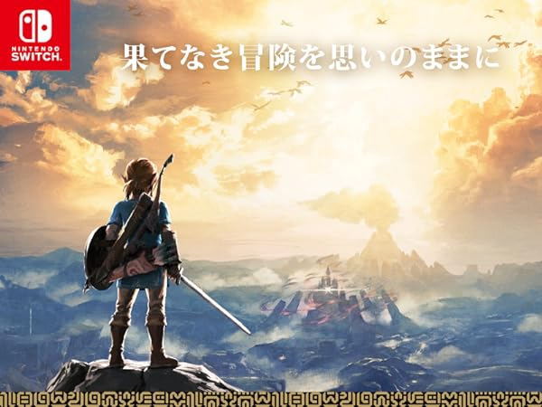Elder Scrollから始まったオープンワールドゲームの中で一番好き。
どこに行っても何かあって、それが導線となってミッションが始まる。
プレイヤーの動きを完全に読んでいる...。">
どこに行っても何かあって、それが導線となってミッションが始まる。
プレイヤーの動きを完全に読んでいる...。">


Tier A 大好きなゲーム


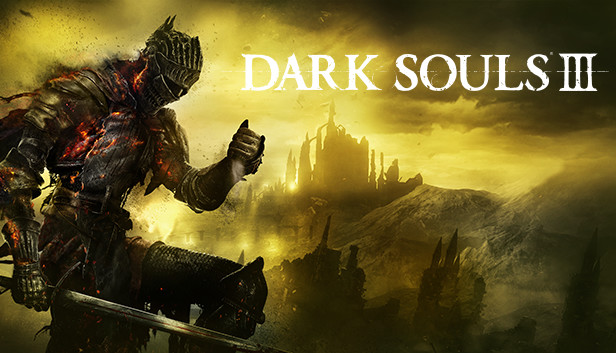劇中で大々的に語られないのに牽引力のあることで有名なソウルシリーズ最後のラスボスがプレイヤーなのが自分自身...
ここからプレイヤーの情緒に強く訴える作家性を身に着け始めた印象。">
ここからプレイヤーの情緒に強く訴える作家性を身に着け始めた印象。">

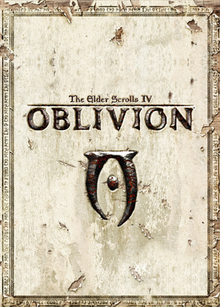Ⅳが好きすぎてⅤに移行できない。
塔の秘宝ガチャを一生回し続けたせいで勝手に世界が平和になってしまった。">
塔の秘宝ガチャを一生回し続けたせいで勝手に世界が平和になってしまった。">
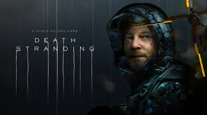ブラックロータスが遊べる絵画なら、こちらは遊べる映画。
しかも極上のステルスアクション。">
しかも極上のステルスアクション。">
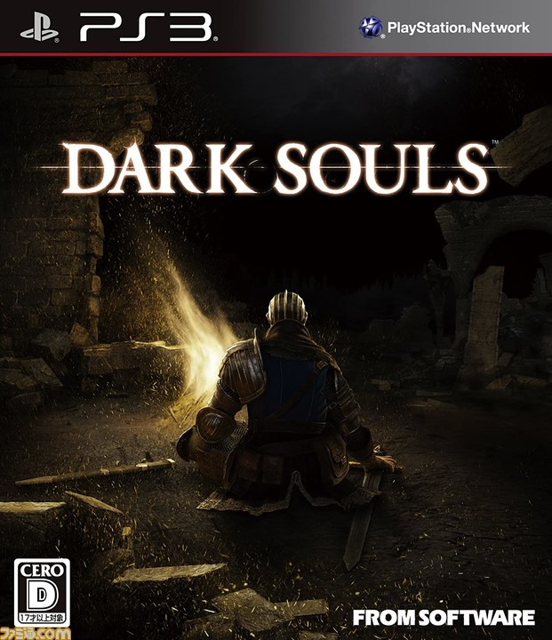この作品以前と以降が明確に存在していると思っています。
今となってはフロムソフトウェアがダクソより面白い作品を作っているわけですが、ソウルライクというジャンル中興の祖は
今やっても面白いと思う。">
今となってはフロムソフトウェアがダクソより面白い作品を作っているわけですが、ソウルライクというジャンル中興の祖は
今やっても面白いと思う。">

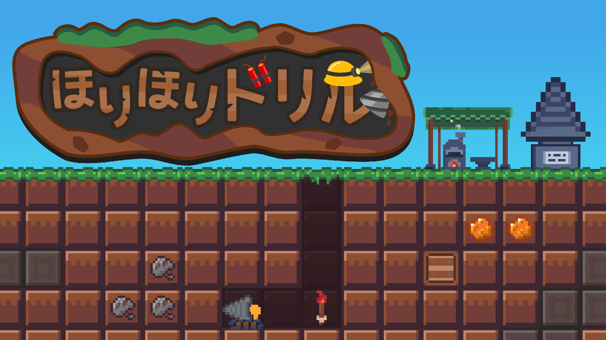iOSゲームで土日を使い切るとは思わなかった。大きな目標に向けて中目標を立て、目の前の小目標を達成...楽しい瞬間が途切れなかった。">

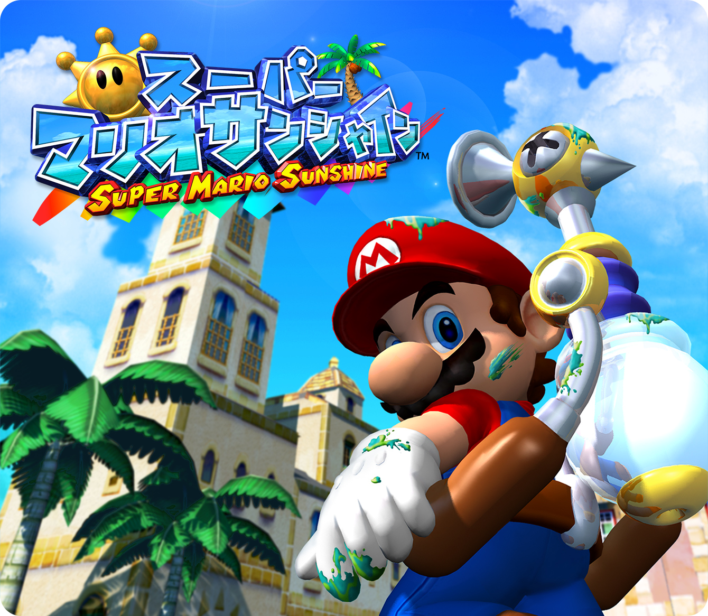夏になると一回は遊ぶ。楽しい。
ポンプの仕様がやりなさそうな事をギリギリやれる緩さを実現するのは大変なんだろうなと思います">
ポンプの仕様がやりなさそうな事をギリギリやれる緩さを実現するのは大変なんだろうなと思います">
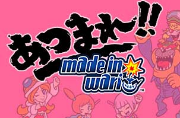アルティメットチキンホースと同じくらいパーティゲームとして大好きなゲーム。
妨害の絵面がマヌケすぎて許せてしまう。">
妨害の絵面がマヌケすぎて許せてしまう。">

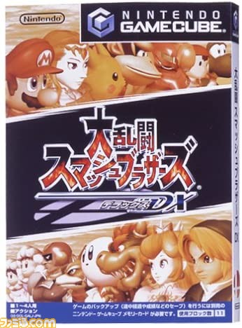スマブラとしてはSPが最高だけど、当時の思い出補正でこれを上げました。">
Tier B 印象深いゲーム
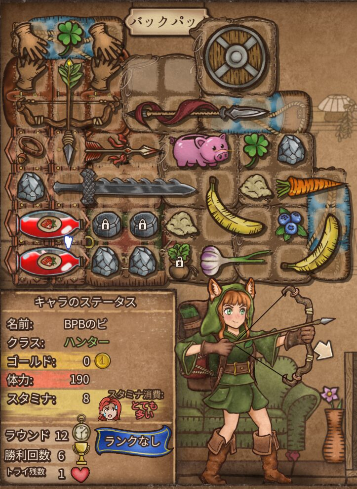
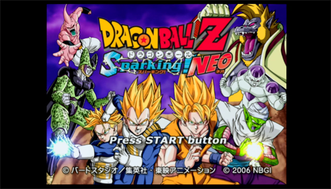

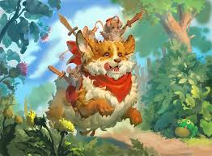


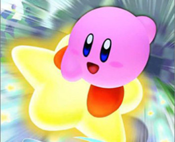
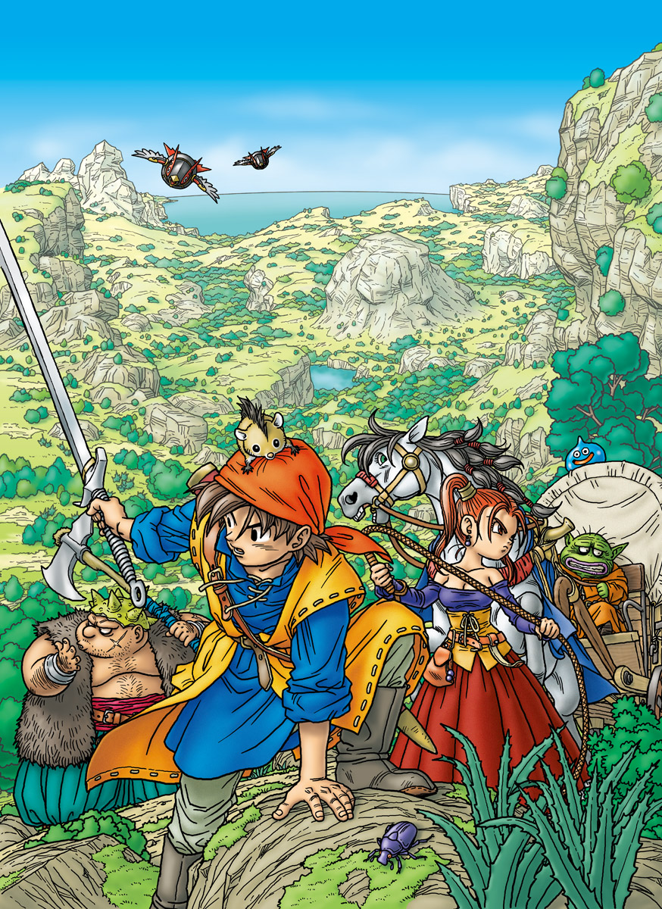

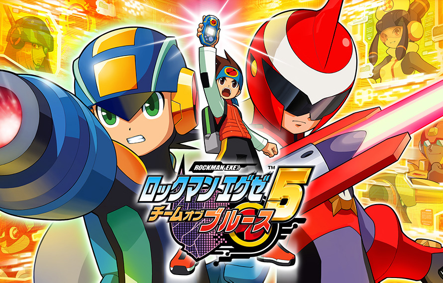
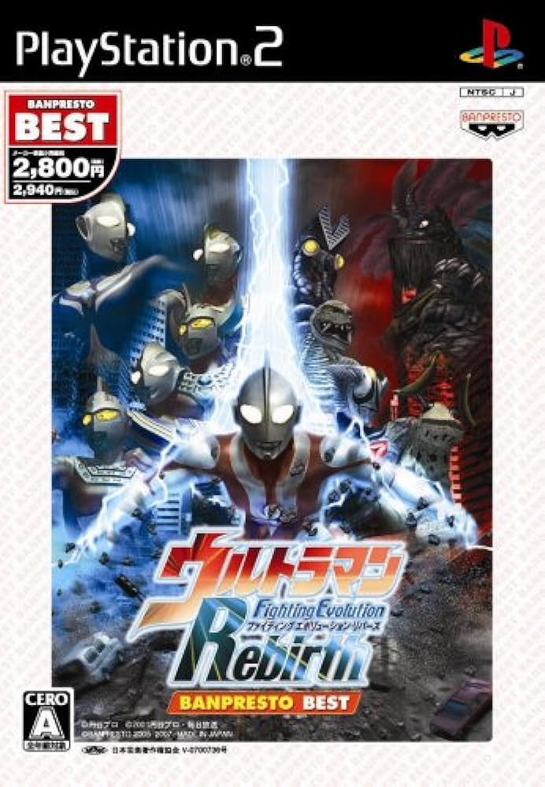

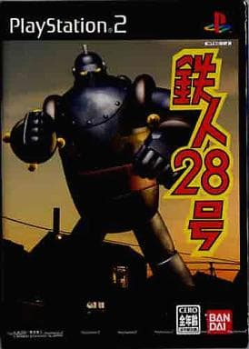
Tier N 思い出のゲーム
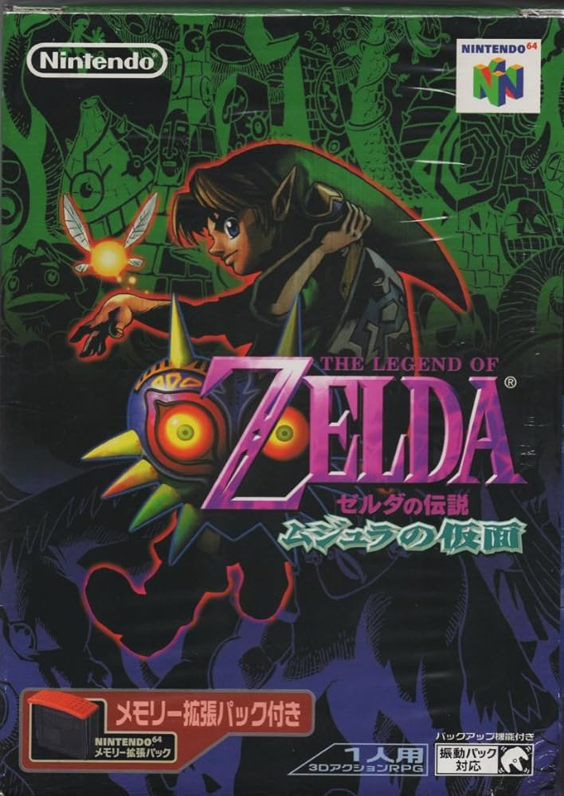

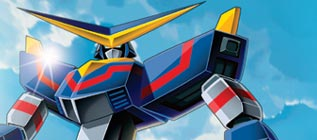
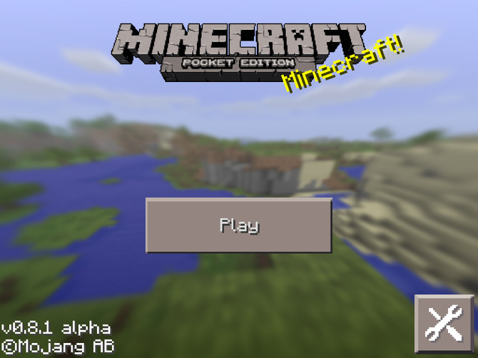
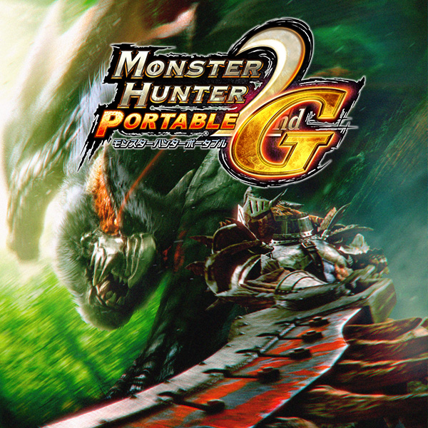
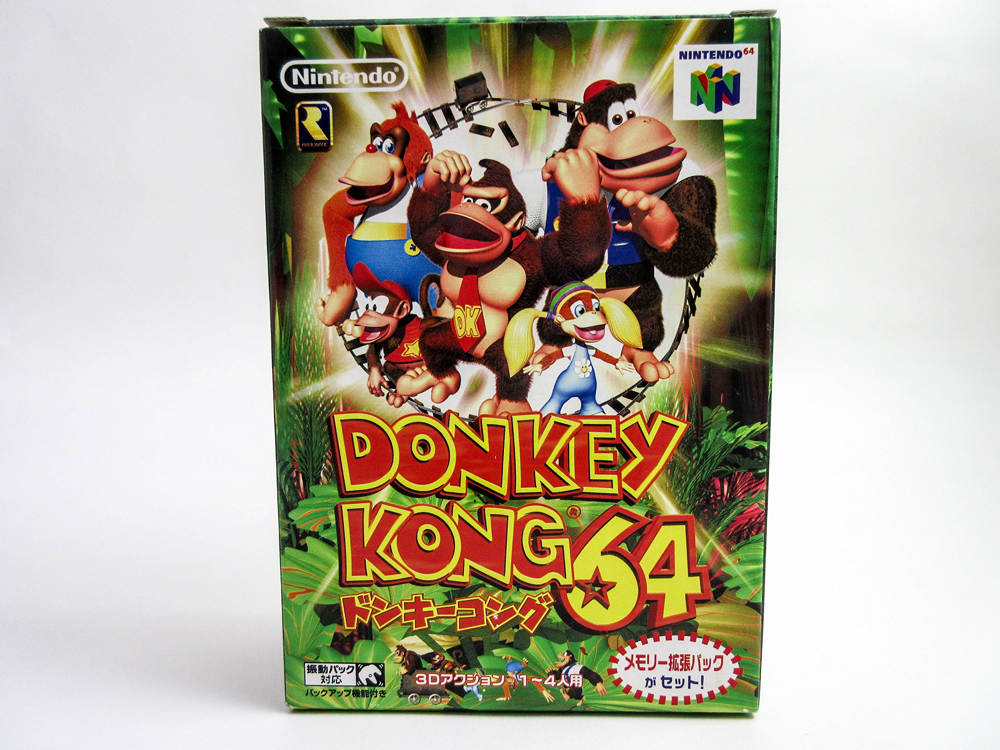
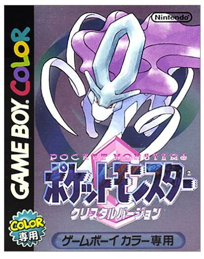
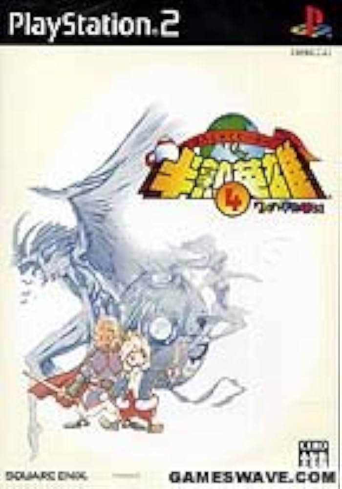
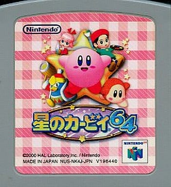
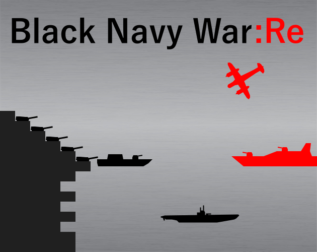